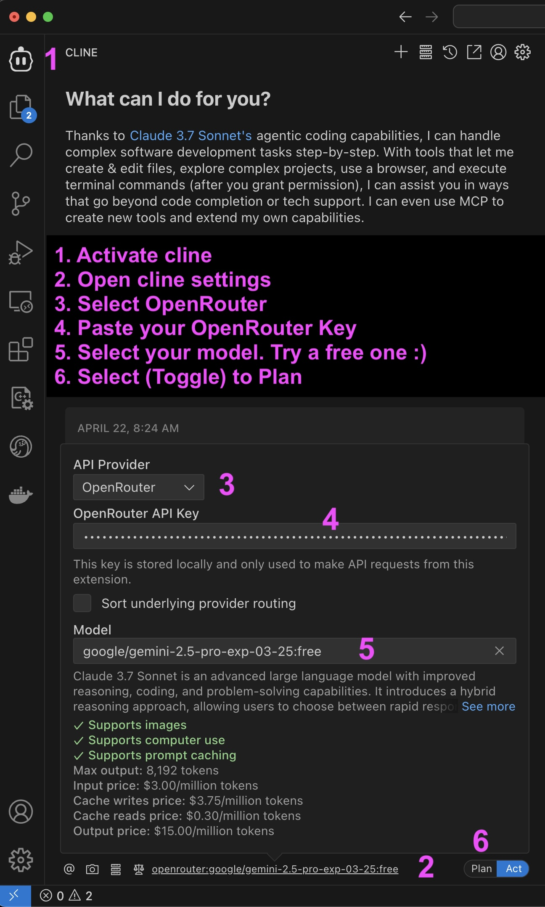

Hei ja tervetuloa! Tämä opas opastaa sinut käyttämään VS Codea Cline-laajennuksen ja OpenRouterin kanssa tutkiaksesi tekoälyagenttien jännittävää maailmaa. Älä huoli, jos et ole koskaan aiemmin koodannut – otamme sen askel kerrallaan.
Visual Studio Code (VS Code) on kuin superälykäs muistilehtiö koodin kirjoittamiseen. Se on ilmainen, ja käytämme sitä puhuaksemme tekoälyn kanssa!
Lataa VS-koodi: Ajattele tätä sovelluksen hankkimisena. Siirry VS Coden verkkosivustolle (https://code.visualstudio.com/) internetselaimella (kuten Chrome, Safari tai Firefox). Etsi iso painike ladataksesi oikean version tietokoneellesi (Windows, Mac tai Linux).
Asenna VS-koodi: Tämä on kuin sovelluksen asentaminen tietokoneellesi.
Cline on kuin taikasauva, jonka avulla VS Code voi puhua tekoälylle. Lisää se seuraavasti:
Avaa VS-koodi: Jos suljit VS-koodin, avaa se uudelleen.
Etsi Extensions-painike: Etsi VS-koodin vasemmalta puolelta neliökuvaketta, joka on tehty pienemmistä neliöistä. Sitä kutsutaan “Laajennukset”-näkymäksi. Voit myös avata sen painamalla Ctrl+Shift+X (tai Macissa Cmd+Shift+X).
Hae Cline: Kirjoita Laajennukset-näkymän yläreunassa olevaan hakukenttään “Cline”.
Asenna Cline: Näet Cline-laajennuksen hakutuloksissa. Sen pitäisi olla Cline-logolla varustettu. Napsauta sen vieressä olevaa “Asenna†-painiketta.
Lataa VS-koodi uudelleen: Kun Cline on asennettu, VS Code pyytää sinua lataamaan ikkunan uudelleen. Tämä on kuin sovelluksen käynnistäminen uudelleen varmistaaksesi, että Cline on valmis. Napsauta “Lataa uudelleen†-painiketta.
OpenRouter on kuin portti moniin erilaisiin tekoälyaivoihin. Meidän on yhdistettävä Cline OpenRouteriin, jotta se voi esittää kysymyksiä ja saada vastauksia.
Luo OpenRouter-tili: Ajattele tätä avaimena tekoälymaailmaan. Avaa Internet-selain ja siirry OpenRouter-verkkosivustolle (https://openrouter.ai/). Napsauta “Rekisteröidy†ja seuraa ohjeita luodaksesi ilmainen tili.
Hanki salainen API-avain: Kun olet kirjautunut sisään, vie hiiri profiilikuvasi/kuvakkeen päälle (oikeassa yläkulmassa) ja valitse “API-avaimet†tai “Avaimet”. Täällä voit luoda salaisen avaimesi. Luo uusi API-avain napsauttamalla painiketta ja anna sille projektiisi tai käyttötapaukseen liittyvä nimi.

1. Aktivoi
Cline: Napsauta Cline-kuvaketta VS Coden sivupalkissa.
Avaa Cline Settings: Etsi asetusten rataskuvake Cline-paneelista.
Valitse OpenRouter: Valitse avattavasta API Provider -valikosta “OpenRouter”.
Liitä OpenRouter Key: Kirjoita OpenRouter API -avain sille varattuun kenttään.
Valitse malli: Valitse malli avattavasta valikosta. Jos olet vasta aloittamassa, kokeile jotakin ilmaisista malleista.
Valitse (Ota käyttöön) Suunnittele: Tämä määrittää vuorovaikutustilan tekoälyn kanssa.
Aika katsoa toimiiko kaikki! Esitämme yksinkertaisen kysymyksen ja katsomme, saako Cline vastauksen OpenRouterilta.
Luo uusi tiedosto: Napsauta VS Codessa viestin syöttöruutua ikkunan vasemmassa alakulmassa. (huom
Kirjoita kysymyksesi: Kirjoita nyt seuraava kysymys viestin syöttöruutuun: Mikä on Ranskan pääkaupunki?
Kysy Clinelta vastausta: Napsauta lähetyskuvaketta
Katso vastaus! Cline lähettää kysymyksesi OpenRouterille, ja OpenRouter käyttää tekoälyä löytääkseen vastauksen. Vastaus tulee näkyviin yllä olevaan viestiketjuun. Sen pitäisi sanoa jotain tällaista: “Ranskan pääkaupunki on Pariisi.†ğŸ‰
Taputa itseäsi selkään! Olet onnistuneesti määrittänyt VS Coden, asentanut Clinen, yhdistäted OpenRouteriin ja esitti ensimmäisen tekoälykysymyksesi. Olet virallisesti AI-matkailija!
Nyt alkaa todellinen hauskuus! Tässä on muutamia ideoita oppimisen jatkamiseksi:
Kysy lisää kysymyksiä! Kokeile kysyä Clinelta erilaisia ​​kysymyksiä. Mitä tapahtuu, jos pyydät sitä kirjoittamaan runon? Tai kääntää lause toiselle kielelle?
Tutustu erilaisiin tekoälymalleihin: OpenRouter antaa sinulle pääsyn moniin erilaisiin tekoälyaivoihin. Katso, voitko selvittää, kuinka voit vaihtaa niiden välillä ja vertailla heidän vastauksiaan.
Lue Cline Manual: Clinella on monia muita temppuja hihassaan! Tutustu asiakirjoihin saadaksesi tietoa kaikista hienoista asioista, joita se voi tehdä.
Jatka tutkimista, jatka kysymysten esittämistä ja mikä tärkeintä, pidä hauskaa!